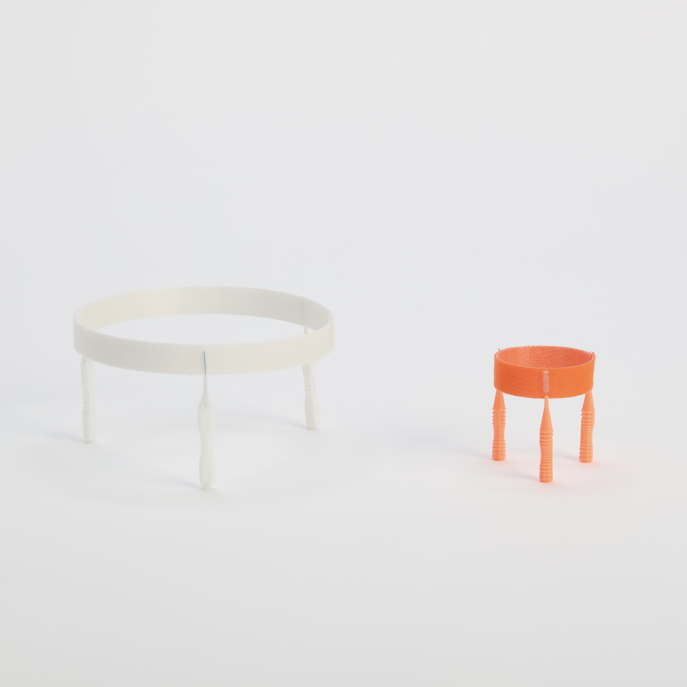

構成
演習授業「コンストラクション」での制作物 モノの意味や機能から離れ、素材として扱うことで新たな魅力に繋がるオブジェ。身の回りにあるものに、新しい視点を見つけます。
[Construction]
Construction : Nozomi Terashima



演習授業「コンストラクション」での制作物 モノの意味や機能から離れ、素材として扱うことで新たな魅力に繋がるオブジェ。身の回りにあるものに、新しい視点を見つけます。
[Construction]
Construction : Nozomi Terashima